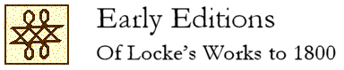

John Locke Chronology |
John Locke Manuscripts |
John Locke Resources |
John Locke Bibliography | ||
[ Table of Contents ] – [ Part One: Works by Locke ]

The publication of editions and translations of Locke’s works is one indication of the spread of Lockean ideas. This list covers Locke’s writings published through 1800. The basic list was compiled by Mark Goldie and published in Locke studies, vol. 5 (2005), and is posted here with permission. The information derives from Jean S. Yolton, John Locke: a descriptive bibliography (Bristol, 1998), and “Addenda and errata to John Locke: a descriptive bibliography” (2004).
Four arrangements are provided:
- Arranged by the title of work
- Arranged by the place of publication
- Arranged by the date of publication
- Language index to translations
Arranged by Title of Work
Works are listed in declining order of popularity, except that associated writings are grouped together. Place of publication was London unless otherwise stated. Republications of writings in collections are not separately listed. Figures in square brackets indicate number of editions.
Some thoughts concerning education [66]
English [25]: 1693 (twice), 1695, 1699, 1705, 1709, 1710, 1712, 1721, 1725, 1728 (Dublin), 1732, 1737 (Dublin), 1738, 1738 (Dublin), 1745, 1752, 1752 (Edinburgh), 1764, 1769, 1772, 1778, 1778 (Dublin), 1779 (Edinburgh?), 1800
French [20]: 1695 (Amsterdam), 1699 ([Geneva?]), 1708 (Amsterdam), 1711 (Paris), 1715 (“Amsterdam” [Berne?]), 1721 (Amsterdam), 1727 (“Amsterdam” [Geneva?]), 1730 (“Amsterdam” [Geneva?]), 1733 (Amsterdam), 1737 (Amsterdam), 1743 (Amsterdam, twice), 1744 (Amsterdam), 1746 (Lausanne), 1747 (Paris), 1760 (Lausanne), 1776 (Amsterdam), 1783 (Paris), 1798 (Paris)
Italian [8]: 1735 (Lucca), 1735 (Venice), 1736 (Verona; selections), 1750 (Lucca), 1751 (Venice), 1781 (Naples), 1782 (Venice), 1792 (Venice)
German [6]: 1708 (Greifswald), 1708 (Leipzig), 1729 (Hanover), 1761 (Leipzig), 1787 (Vienna and Wolfenbüttel), 1787 (Leipzig)
Russian [3]: 1759 (Moscow), 1760 (Moscow), 1788 (Moscow)
Dutch [2]: 1698 (Rotterdam), 1753 (Amsterdam)
Swedish [1]: 1709 (Stockholm)
Polish [1]: 1781 (unverified)
An essay concerning human understanding [54]
English [30]: “1690” [i.e. 1689], 1694, 1695, 1700, 1706, 1710, 1715-16, 1721, 1726, 1731, 1735, 1741, 1748, 1753 (London; Berwick), 1759 (Glasgow), 1760, 1765 (Edinburgh), 1768, 1772 (Dublin), 1775, 1777 (Dublin), 1777 (Edinburgh), 1786, 1786 (Dublin), 1788, 1793, 1795, 1796, 1798 (Edinburgh and Glasgow)
French [16]: 1700 (Amsterdam), 1714 (The Hague), 1723 (“Amsterdam” [Basel?]), 1729 (Amsterdam), 1735 (Amsterdam), 1742 (Amsterdam), 1750 (“Amsterdam” [Paris?]), 1755 (Amsterdam and Leipzig), 1758 (“Amsterdam” [Paris?]), 1774 (Amsterdam, twice), 1786-7 (Paris), 1791 (Amsterdam), 1795 (Paris), 1799 (Paris), 1800 (Bern, unverified)
Latin [5]: 1701, 1709 (Leipzig), 1741 (Leipzig), 1758 (Leipzig), 1788-91 (Naples)
German [2]: 1757 (Altenburg), 1795-7 (Jena and Leipzig)
Polish [1]: Cracow (1784; selections)
An Abridgment of Mr. Locke’s Essay (Wynne) [34]
English [19]: 1696, 1700, 1721, 1728 (Dublin), 1731, 1734 (Dublin), 1737, 1744 (Glasgow), 1751 (Dublin), 1752 (Glasgow), 1767 (Edinburgh), 1769 (Dublin), 1770 (Edinburgh), 1774, 1778 (Edinburgh and London), 1779, 1782, 1791 (Dresden), 1794 (Boston, Mass.)
French [9]: 1720, 1738 (Geneva), 1741 (‘London’, Paris?), 1741 (Geneva), 1746 (‘London’, Paris?), 1751 (‘London’, Paris?), 1788 (Geneva), 1788 (Dresden, unverified), 1792 (Uppsala)
Italian [3]: 1775 (Milan), 1790 (Venice), 1794 (Venice)
Dutch [1]: 1766 (Antwerp)
German [1]: 1791 (Mannheim)
Greek [1]: 1796 (Venice)
An abstract of the Essay of human understanding (Gilbert) [8]
English: 1709, 1728, 1728 (Dublin), 1735 (Dublin), 1751, 1752 (London and York), 1781 (Cambridge), 1791
A syllabus of Locke’s Essay [1]
English: 1796
A letter to Edward Lord Bishop of Worcester [1]
English: 1697
Mr. Locke’s Reply to the Right Revd the Lord Bishop of Worcester [1]
English: 1697
Mr. Locke’s Reply to the Right Revd the Lord Bishop of Worcester’s Answer [1]
English: 1699
Two treatises of government [32]
2T = Second treatise only
English [16]: “1690” [i.e. 1689], 1694, 1698, 1713, 1728, 1753 (selections from 2T), 1764, 1766 (Dublin), 1772, 1773 (Boston, Mass., 2T), 1779 (Dublin), 1794 (Dublin), 1794? (Sheffield, selections from 2T), 1796 (Glasgow), 1798 (Dublin, twice, 2T)
French (all 2T) [11]: 1691 (Amsterdam), 1724 (Geneva), 1749 (Brussels? [Paris?]), 1754 (Brussels? [Paris?]), 1755 (Amsterdam), 1780 (Amsterdam), 1783 (Paris), 1790 (Paris, selections), 1795 (Paris), 1795 (Paris), 1795 (Paris)
German [2]: 1716 (Jena, unverified), 1718 (Frankfurt and Leipzig, 2T)
Swedish [1]: 1726 (Stockholm, 2T)
Dutch [1]: 1728 (Groningen, 2T, unverified)
Italian [1]: 1773 (‘Amsterdam’, 2T)
Epistola de tolerantia / A letter concerning toleration [26]
Latin [2]: 1689 (Gouda), 1705 (Amsterdam)
English [13]: 1689, 1690, 1740 (n.p.), 1743 (Boston, Mass.), 1757 (Glasgow), 1762, 1764 (Wilmington, Delaware), 1784, 1788 (Windsor, Vermont), 1788 (York), 1790 (Stockbridge, Mass., unverified), 1796 (Huddersfield), 1800
German [5]: 1710 (n.p.), 1714 (n.p.), 1724 (n.p.), 1728 (Hamburg and Leipzig), 1796 (Leipzig)
Dutch [4]: 1689 (Rotterdam), 1730 (Harlingen, unverified), 1734 (Amsterdam), 1774 (Amsterdam)
French [1]: 1764 (n.p., Geneva?)
Swedish [1]: 1793 (Stockholm)
A second letter concerning toleration [2]
English: 1690
Dutch: 1774 (Amsterdam)
A third letter concerning toleration [1]
English: 1692
Four letters concerning toleration [1]
English: 1765
The reasonableness of Christianity [16]
R = Reasonableness; V = Vindication; S = Second vindication;
a = abridged
English [8]: 1695, 1696, 1731 (with V), 1736 (with V and S), 1748 (with V and S), 1764, 1785, 1791
French [5]: 1696 (Amsterdam), 1715 (Amsterdam, with Va and Sa), 1730 (Hague, unverified), 1731 (Amsterdam, with Va and Sa), 1740 (Amsterdam, with Va and Sa)
German [2]: 1733 (Braunschweig, with Va and Sa), 1758-9 (Berlin and Leipzig, with Va and Sa)
Dutch [1]: 1729 (Amsterdam)
A vindication of The reasonableness of Christianity [10]
English [4]: 1695, 1731 (with R), 1736 (with R and S), 1748 (ditto)
French [4]: 1703 (Amsterdam; Va, with Sa), 1715 (Amsterdam; Va, with R and Sa), 1731 (Amsterdam; Va, with R and Sa), 1740 (Amsterdam; Va, with R and Sa)
German [2]: 1733 (Braunschweig; Va, with R and Sa), 1758-9 (Berlin and Leipzig; Va, with R and Sa)
A second vindication of The Reasonableness of Christianity [9]
English [3]: 1697, 1736 (with R and V), 1748 (with R and V)
French [4]: 1703 (Amsterdam; Sa, with Va), 1715 (Amsterdam; Sa, with R and Va), 1731 (Amsterdam; Sa, with R and Va), 1740 (Amsterdam; Sa, with R and Va)
German [2]: 1733 (Braunschweig; Sa, with R and Va), 1758-9 (Berlin and Leipzig; Sa, with R and Va)
Of the conduct of the understanding [10]
English [8]: First published in Posthumous works (1706); 1741, 1754 (Glasgow), 1762, 1763 (Glasgow), 1781 (Cambridge), 1782 (Dublin), 1794, 1800
German [1]: 1755 (Königsberg)
Dutch [1]: 1766 (Antwerp, unverified)
Italian [1]: 1776 (Milan)
A paraphrase and notes on the Epistles of St Paul [11]
English [9]: 1707, 1709, 1733, 1738 (Dublin), 1742 (twice), 1751, 1763, 1794
Dutch [1]: 1768 (Amsterdam)
German [1]: 1768-9 (Frankfurt)
The five component works also appeared separately: Galatians (1704, 1706, 1708, 1718), 1 Corinthians (1706, 1718), 2 Corinthians (1706), Romans (1707), Ephesians (1707), and the introductory essay (1707)
Works [9]
English: 1714, 1722, 1727, 1740, 1751, 1759, 1768, 1777, 1794
Selected works [2]
French: 1710 (Rotterdam), 1732 (Amsterdam)
Methode nouvelle de dresser des recueils / A new method of making commonplace books [7]
French [1]: 1686 (Amsterdam, in Bibliotheque universelle)
English [1]: 1706
German [1]: 1711 (Frankfurt and Leipzig)
Dutch [4]: 1739 (Amsterdam), 1757 (Amsterdam), 1762 (Amsterdam), 1769 (Amsterdam, unverified)
Elements of natural philosophy [7]
English [5]: First published in A collection of several pieces (1720, 1724, 1739); 1750 (undated, twice), 1751 (Glasgow), 1754 (Berwick), 1758 (Glasgow), 1764 (Whitehaven) [all but the 1758 ed. also included Some thoughts concerning reading and study for a gentleman].
French [1]: 1757 (Amsterdam and Leipzig)
Russian [1]: 1774 (St Petersburg)
Some considerations of the consequences of the lowering of interest [3]
English [3]: 1692, 1696, 1718 (abr.)
Short observations on a printed paper [2]
English: 1695, 1696
Further considerations concerning raising the value of money [3]
English: 1695 (twice), 1696
Several papers relating to money, interest and trade [2]
English: 1696
Italian: 1751 (Florence)
A discourse of miracles [2]
English [1]: 1743 (Glasgow)
Swedish [1]: 1795 (Stockholm)
Observations upon the growth and culture of vines and olives [1]
English: 1766